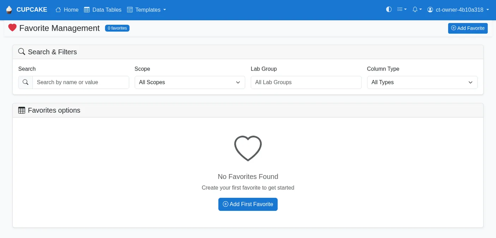

A favourite is a value kept for a column, offered first when you edit that column's values. A favourite is personal, shared with a lab group, or global, for everyone.

Favorite Management searches favourites by name or value, scope, lab group and column type. Add Favorite adds
one: the column name, such as characteristics[organism], the value, an optional display name, and its scope. Values
are also added from the value editor with Add to Favorites.